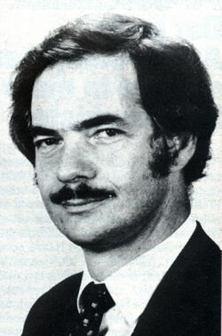

8 Pagan Tuna Posts ↑
Originally published at PaganTuna.com on 12 Jun 2009.
Entrepreneurs sometimes get a bad rap.
Anybody recognize this gentleman?

A few years before the iPod, he developed and marketed a portable computer about the size and heft of a sewing machine, and sold it under his own name. It ran what was then the most popular operating system for home computers, and came with a slew of software, including a Basic compiler from what was then a relatively small startup in the great Northwest.
It was a revolutionary computer in many ways, and achieved some notable short-term success. However, its creator never made any money from it, and it was driven out of business by its competitors in a few years, which is why the guy who marketed that pre-Visual Basic compiler is now a lot better known than Adam Osborne.
This is our usual image of the entrepreneur: the restless loner, always willing to risk it all on one more roll of the dice, one last long shot, one final chance to grab the golden ring.
I stumbled across a wonderful book recently, The Empowered Manager: Positive Political Skills at Work, by Peter Block, and in it he talks about choosing the entrepreneurial path over the bureaucratic path when working within large organizations.
Block tells a wonderful story of himself working as a young consultant, trying to help a regional chain of supermarkets compete successfully in a changing marketplace. The approach they took was to grant more power to the lower levels of the organization, to encourage individual store managers to take more personal responsibility for the success of their stores.
The story is an amusing one. They start with the store managers, launch a change campaign at their level, and meet with limited success. When they meet with the store managers to find out what is going on, they complain of resistance from the next level up.
Alright. The team regroups, designs a new change campaign to focus on the regional managers and, after considerable further investment of time and money, they discover that this campaign too has had disappointing results. They meet with the regional managers, interview them to discover the impediments to change and – guess what – they’re not the problem, it’s their managers.
You can probably get a sense of where this is going. Sure enough, Block finally ends up in the office of the president of the corporation. His narrative here is too good to let it suffer from my attempts to paraphrase:
I was especially eager for this meeting since it would be my first real opportunity to deal directly on an intimate basis with the person in the seat of power in a major corporation. … If change had to come from the top, I was meeting with the right person.
The meeting was scheduled, and I arrived eager and dressed in my newly pressed power suit. After a little light chatter about the weather and the ball scores, I mentioned that the purpose of this meeting was to talk about how he could personally support the change effort we were engaged in. He said he had met with the chairman of the board of directors earlier that morning and the chairman brought up a series of minor issues that were a real nuisance to have to deal with. I suggested perhaps that Hilliard, the president, could support our program by personally getting out in the stores more. Hilliard said that the chairman was not giving him all the support he needed. I urged that Hilliard could perhaps allow certain merchandising decisions to be made at the district level instead of at the headquarters office in Somverville, Massachusetts. He said he was also having a hard time with certain analysts on Wall Street. They refused to acknowledge the progress the new management was making, and the stock price remained depressed. I suggested we might hold a team-building session with the top thirty people. He stated that not only were the chairman of the board and the bankers giving him a hard time, but he was frustrated with the ketchup in the company cafeteria.
It was at this point that I began to recognize that the conversation was not going the way that I had anticipated. I asked him to tell me a little more about the ketchup in the company cafeteria. He said it was too thin and watery. I acknowledged that watery ketchup could be deeply disappointing, thinking to myself that I had just stepped onto the set of a Woody Allen movie. Hilliard began to get a little irritated with me and claimed I did not understand the point he was making. He was right. I noticed that he was wearing shoes with a clay-colored tint to them. He explained that the ketchup in the company cafeteria was a Finast private label brand, and two weeks ago he had suggested that the product needed to be thickened to compete effectively with the name brand products. He was constantly amazed at the effort it took to bring about even the smallest change in this old-line company. He thought that at least someone could have thickened the ketchup at his table in the company cafeteria, even if the product on the shelves remained watery.
I was stunned. I had thought that the president of a company could have it any way he or she wanted it. I had pursued the source of power all the way up the organization, and here the chief executive officer was telling me he was caught in the middle like the rest of us.
Block’s experience mirrors my own. When I talk to employees about making their software development more lean and agile, they often tell me that they would love to, but their bosses won’t let them, or their management won’t buy them the tools they need to make it possible. When I talk to people trying to promote internal standards, they often suggest we ask our corporate leaders to issue an official edict that will force people to follow the standards. And when I talk to leaders, they often ask for suggestions on how we can get people to follow the guidance that has already been dispensed.
So who has the power to make change happen inside of large organizations? The truth, of course, is that:
So where does that leave us? Block says that all of us have essentially three choices to make that determine to what degree we will be entrepreneurial rather than bureaucratic:
We choose between Maintenance and Greatness.
We choose between Caution and Courage.
We choose between Dependency and Autonomy.
I had the privilege of having lunch yesterday with a group of corporate entrepreneurs. This is a group that has been working together to create and deliver an internal course on Agile software development. Five years ago, when some of them started employing Agile at work, they had to fly under the corporate radar in order to get started. This year, Agile has been officially recognized as something management would like to see more of – with the result that some members of the group now have people calling them to ask if they can get credit for being Agile without really having to do anything different.
At no time during our lunch did I hear anyone use the words Greatness, Courage or Autonomy. And yet, over and over again, as we ate and chatted and talked about their Agile accomplishments, I heard the same themes: they were not content to keep doing the same things over and over again; they were excited to try something new that would make them and their teammates more effective; they were willing to take reasonable risks; they were willing to act independently, while still taking full responsibility for their actions.
More and more, as I engage in discussions about what it takes to change corporate culture, it seems to me that this is often the key issue: how many of us are willing to stand up and say these magic words…
The watery ketchup stops here.
Next: Reference